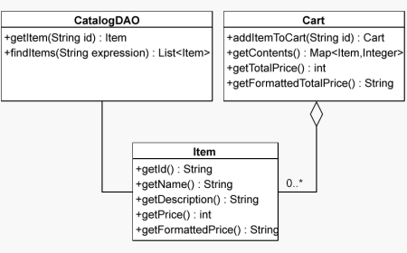

DWR has cropped up in various tutorials around the web.
Various tutorials have been written about integrating DWR with different technologies:
This section is a group of introduction articles to DWR. Mostly from the 1.x time frame.
About DWR from it's principle author - Joe Walker
Excerpt: This article demonstrates the use of DWR to create a multi-user web-based chat site. It demonstrates how simple it is to integrate JavaScript in the web browser with Java on the server. The aim is to have a fully functional system in about 100 lines of code for both the client and the server...
This introduction has been translated into Spanish by Mariano Ayesa and translated into Italian by Federico Paparoni.
Katherine Martin updated this article with the release of DWR 2.0 to include chat using reverse ajax.
With release 2.0, DWR continues on the same theme, removing from the developers shoulders the pesky problem of "pushing" information. It introduces the term reverse Ajax to describe this asynchronous transfer of messages from server to browser or browsers.
Sang Shin from Sun has created a set of Hands on Labs that discuss various Ajax technologies. The DWR part of the labs starts here.
Excerpt: This hands-on lab takes you through the basics of using DWR for developing AJAX-based web applications. This document is designed to get you going as quickly as possible.
Data serialization doesn't get any easier than this! by Phil McCarthy
Excerpt: Philip McCarthy shows you how to use Direct Web Remoting (DWR) to expose JavaBeans methods directly to your JavaScript code and automate the heavy-lifting of Ajax... While DWR is not the only Ajax-RPC toolkit available for the Java platform, it is one of the most mature, and it offers a great deal of useful functionality.
Introduction to Ajax and DWR by David Teare
Excerpt: For Java Developers there are a number of different frameworks/libraries that hide most of the complexity of developing AJAX-enabled Web applications. For this purposes of this article I'll be using one of those libraries called DWR or Direct Web Remoting. I chose DWR because I haven't found another framework/library that's easier to use or as flexible...
The print version of this page is a lot more readable and doesn't contain any embedded videos or pop over dialogs.
An introductory article to DWR by Cloves Carneiro Jr.
Excerpt: This article explains the advantages of using the open source project DWR (Direct Web Remoting) with AJAX (Asynchronous JavaScript and XML) concepts to improve Web application usability. The author takes a step-by-step approach to show how DWR makes adopting AJAX simple and fast. (1,600 words; June 20, 2005)